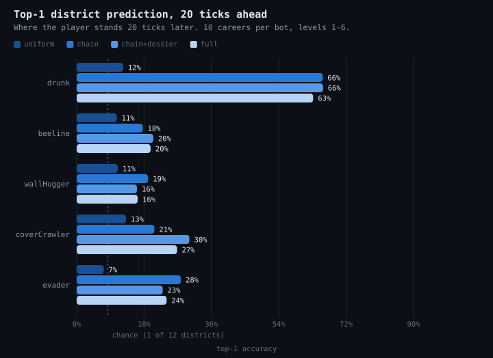
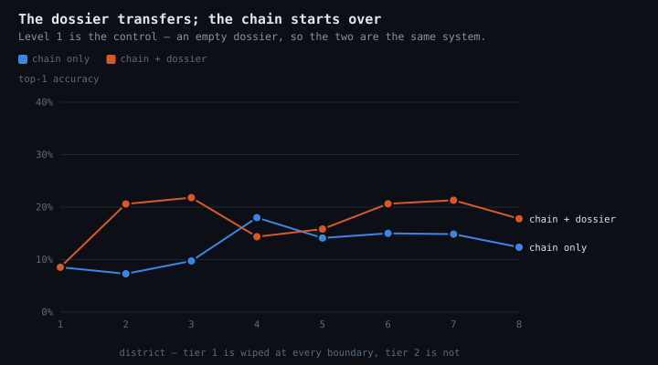
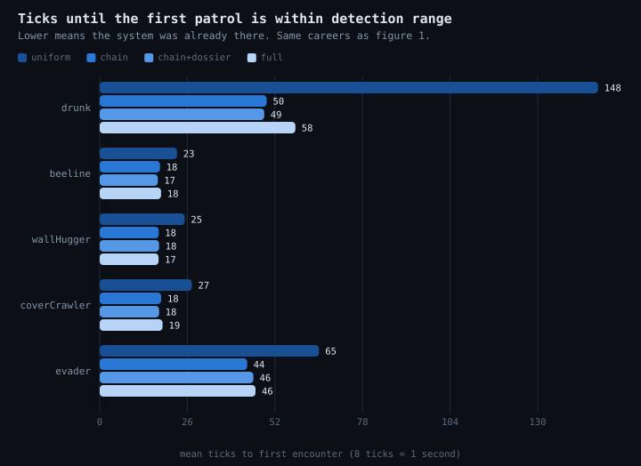

NOISE
Benchmark figures, generated by npm run plots. Every number is measured, not
asserted; play the game or run npm test for the acceptance criteria.
Each figure carries its data as a table below it, so nothing here depends on telling the colours apart.
1 · Can it predict you at all?
Each bar is the share of the time the predictor's single most likely district is the one the player is actually standing in twenty ticks later. Chance is one in twelve.

| bot | uniform (baseline) | chain only (tier 1) | chain + dossier (tier 1+2) | full + controller |
|---|---|---|---|---|
| drunk | 12.4 | 65.7 | 65.8 | 63.2 |
| beeline | 10.7 | 17.7 | 20.5 | 19.7 |
| wallHugger | 11.0 | 19.1 | 16.1 | 16.3 |
| coverCrawler | 13.2 | 20.7 | 30.1 | 26.8 |
| evader | 7.3 | 27.8 | 23.0 | 24.0 |
The chain alone is excellent for players who sit still and barely better than chance for players who cross the map: counts from one short one-way trip converge on where the player has been, which twenty ticks ahead of a mover is behind them. Tier 2 is what recovers those cases.
2 · Does learning carry across levels?
Tier 1 is deleted at every level boundary, so anything that improves with level number is the dossier. One attempt per level, averaged over the three goal-driven bots.

| level | chain only | chain + dossier |
|---|---|---|
| 1 | 12.5 | 12.5 |
| 2 | 6.1 | 10.6 |
| 3 | 4.4 | 6.1 |
| 4 | 11.1 | 10.4 |
| 5 | 8.0 | 12.9 |
| 6 | 14.8 | 20.4 |
| 7 | 13.2 | 16.0 |
| 8 | 14.9 | 15.0 |
3 · Is it actually waiting for you?
Accuracy is a claim about a distribution. This is the claim a player can feel: how long before a patrol is close enough to see you.

| bot | uniform (baseline) | chain only (tier 1) | chain + dossier (tier 1+2) | full + controller |
|---|---|---|---|---|
| drunk | 147.9 | 49.5 | 48.8 | 58.1 |
| beeline | 22.9 | 17.9 | 17.2 | 18.2 |
| wallHugger | 25.2 | 17.5 | 17.6 | 17.5 |
| coverCrawler | 27.4 | 18.2 | 17.6 | 18.7 |
| evader | 65.1 | 43.8 | 45.6 | 46.2 |
Lower under the full spawner than under uniform for all five bots, and the two bots that survive long enough for the predictor to converge — drunk and evader — lose more than half their grace period.